Firebase là một trong những BaaS (Backend as a service), tức là một dịch vụ cung cấp các giải pháp backend cho các ứng dụng web và di động.
1. Một tài khoản google
2. Cài đặt nodejs tại đây: nodejs.org
3. Cài đặt Firebase CLI bằng cách mở command line gõ lệnh "npm install -g firebase-tools".
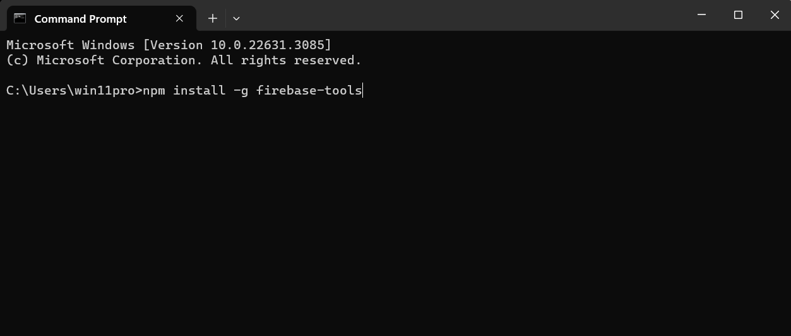Để kiểm tra thì chạy lệnh "firebase --version". Nếu như hiện phiên bản như bên dưới hoặc cao hơn là đã thành công.
1. Vào trang web: firebase.google.com
2. Tiến hành đăng nhập vào firebase bằng tài khoản google.
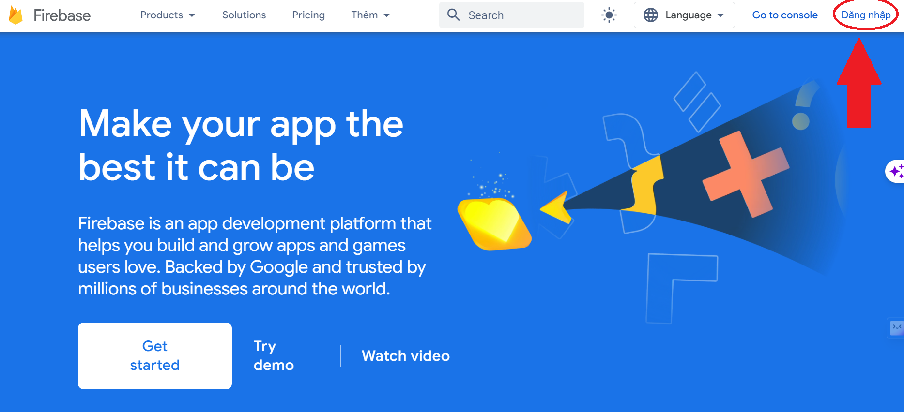3. Sau khi đăng nhập chọn Get started.
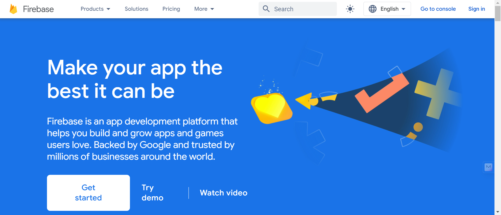4. Tạo một dự án mới.
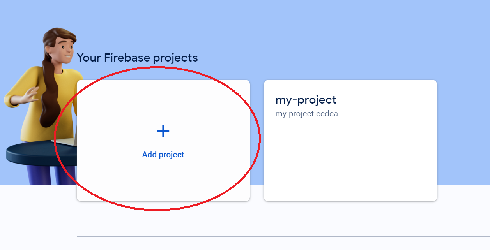5. Đặt tên cho dự án.
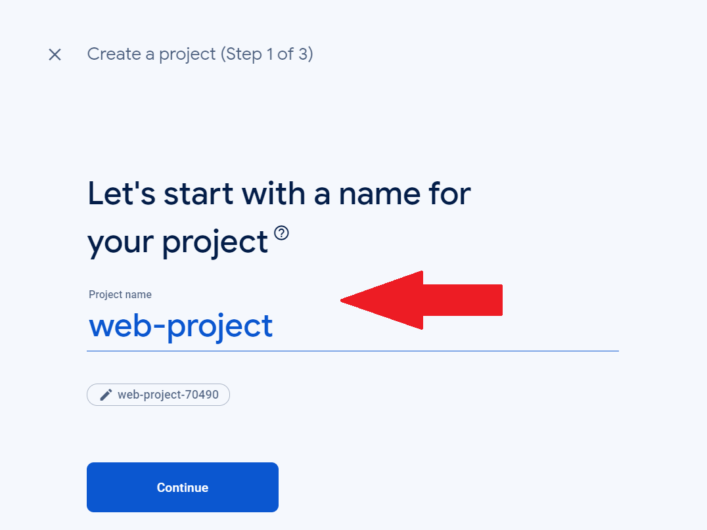6. Chọn Continue.
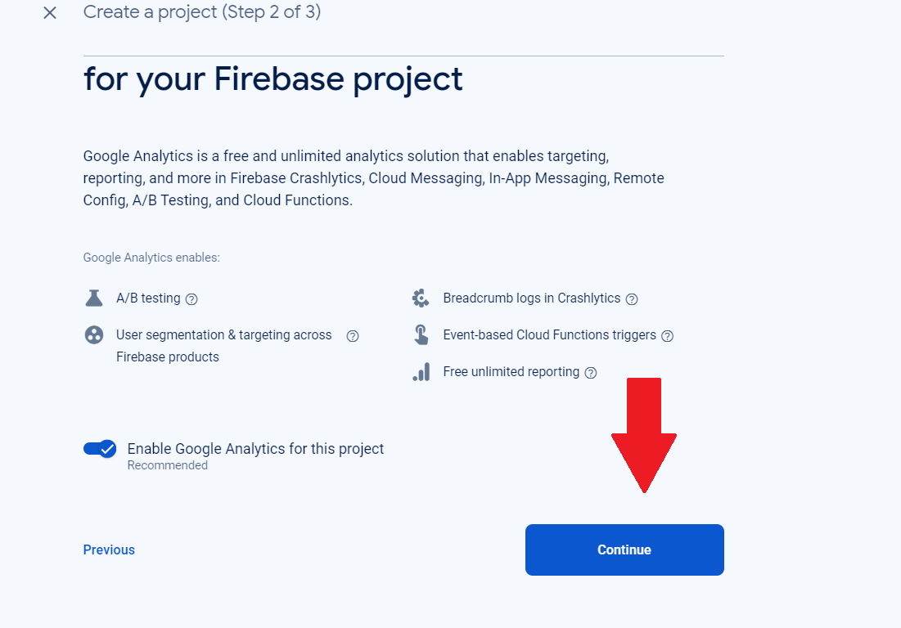7. Chọn Default Account for Firebase. Sau đó chọn Create project.
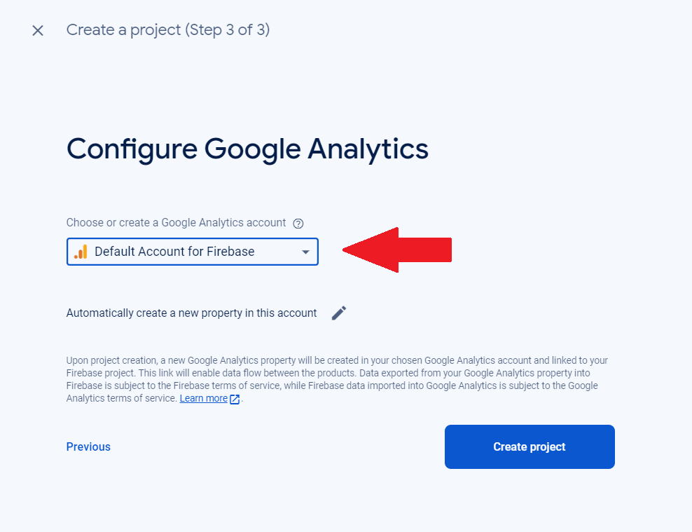8. Chọn vào đây để tạo website cho dự án của bạn.
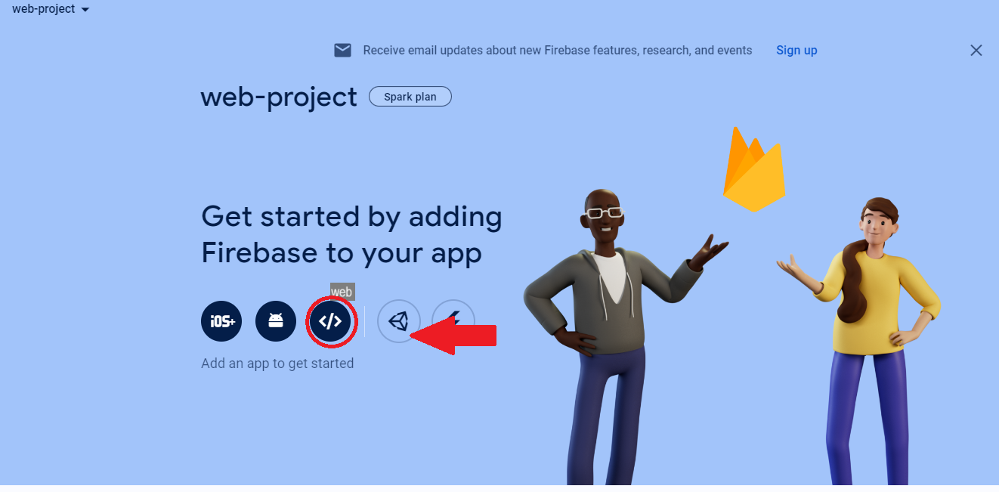9. Đặt tên cho website của bạn (App nickname) và chọn đăng ký (Register app).
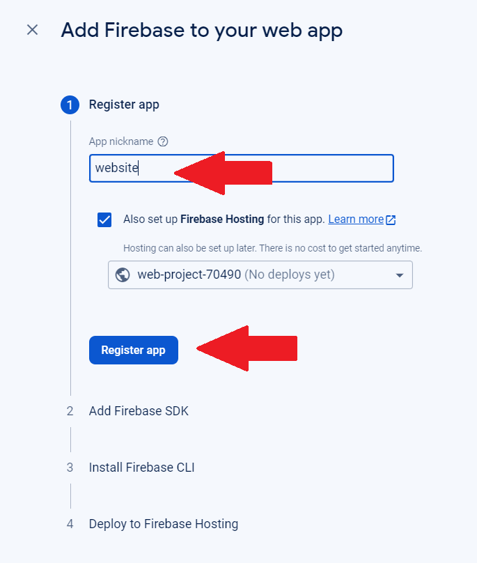10. Đăng ký thành công.
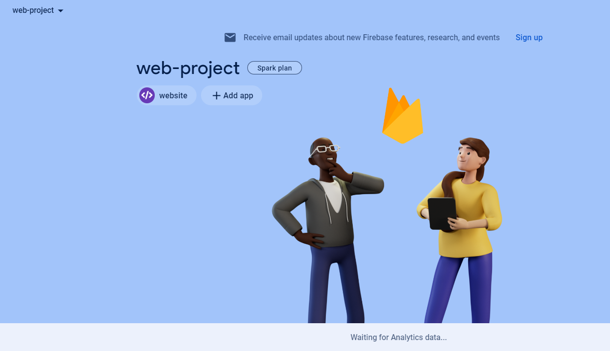11. Tiếp theo cần tạo một thư mục trên máy tính của bạn để chứa dự án.
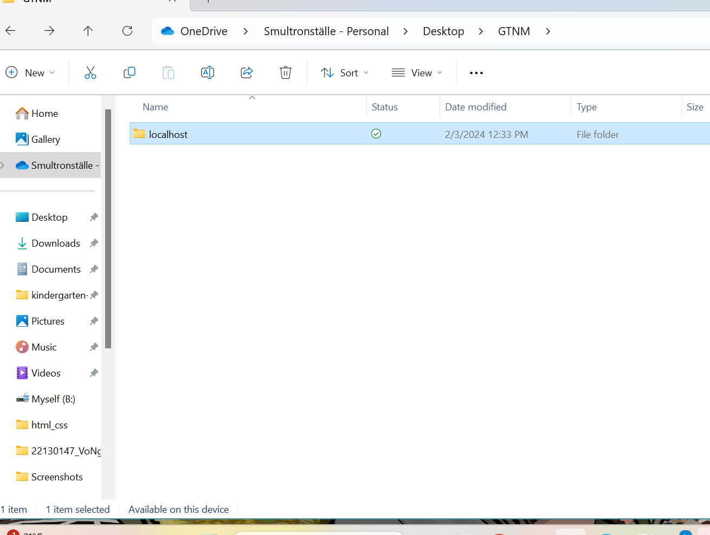12. Mở cmd trong thư mục vừa tạo.
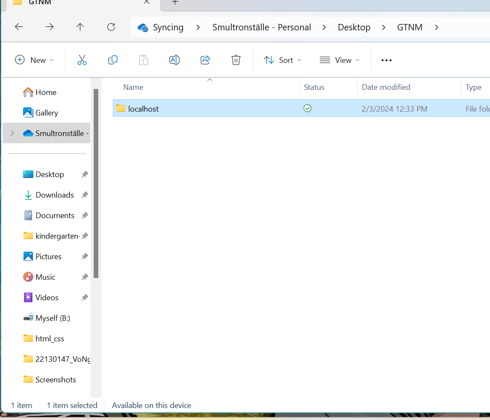13. Đăng nhập vào firebase bằng lệnh "firebase login".
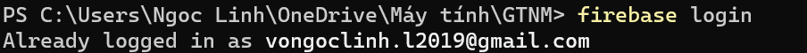14. Sau đó gõ lệnh "firebase init hosting" để kết nối CLI tới tài khoản Firebase online.
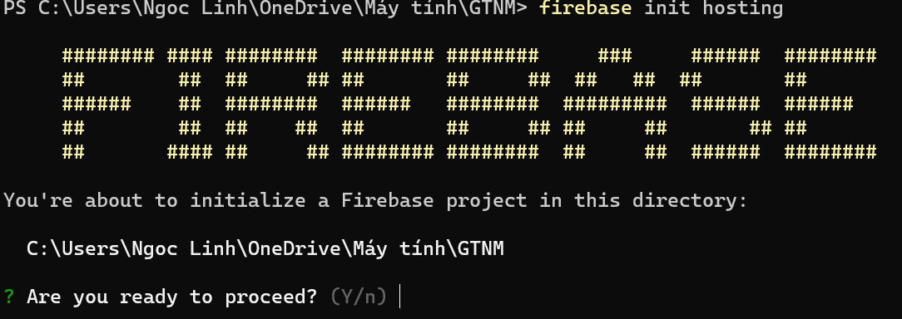15. Chọn "Use an existing project" và chọn tên dự án bạn đã tạo trước đó.
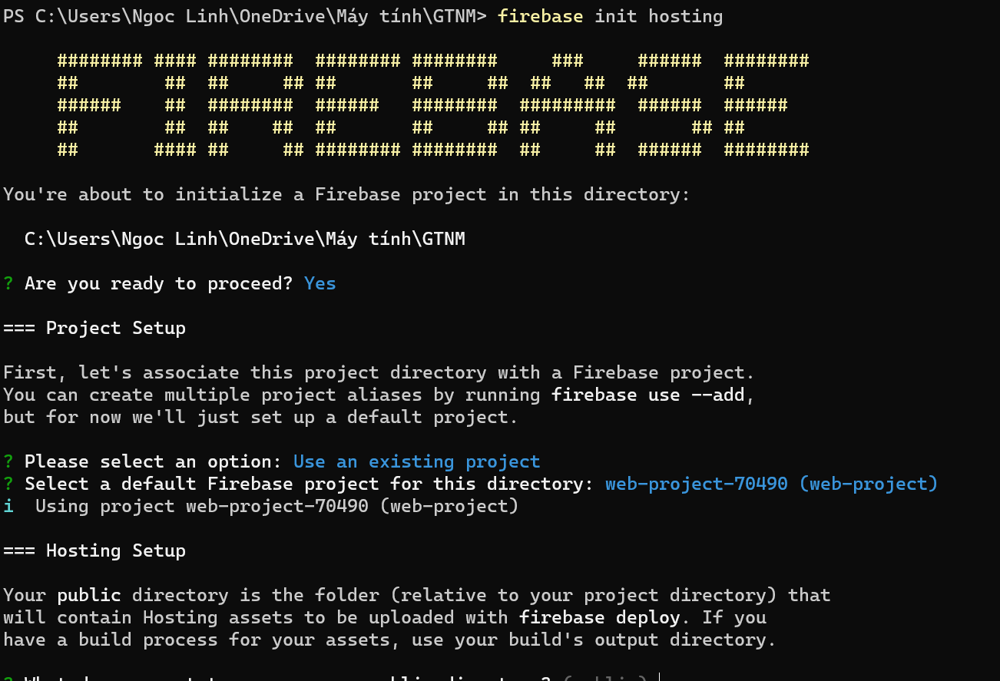16. Trả lời các câu hỏi và chờ xuất hiện dòng chữ "Firebase initialization complete!".
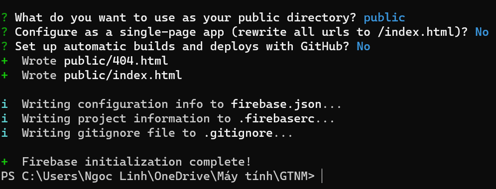17. Gõ lệnh "firebase deploy" để đưa code lên hosting của firebase là xong.
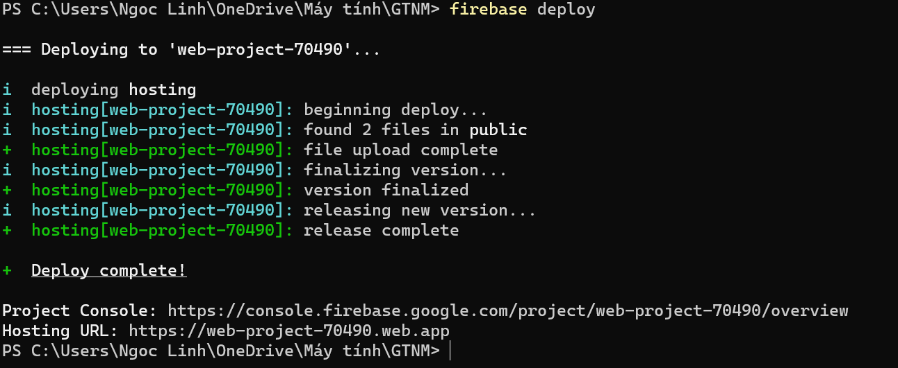18. Truy cập vào đường link trong mục "Project console" hoặc "Hosting URL" để vào website của bạn.
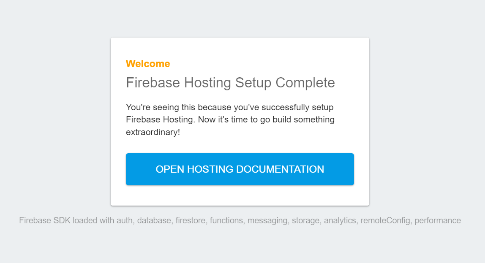Sử dụng Freenom để tạo domain miễn phí
1. Truy cập trang web của Freenom: Mở trình duyệt web và truy cập vào trang chính thức của Freenom tại https://www.freenom.com
2. Tìm kiếm tên miền miễn phí: Sử dụng công cụ tìm kiếm trên trang web của Freenom để tìm kiếm tên miền miễn phí có sẵn với phần mở rộng .tk, .ml, .ga, .cf, ...
3. Chọn tên miền miễn phí: Chọn tên miền mà bạn muốn từ danh sách các tên miền miễn phí có sẵn trên Freenom.
4. Thêm vào giỏ hàng và đăng ký: Sau khí chọn tên miền, thêm nó vào giỏ hàng và hoàn tất quá trình đăng ký. Bạn cần tạo một tài khoản Freenom nếu chưa có tài khoản.
5. Điền thông tin đăng ký: Điền thông tin cần thiết như địa chỉ email, tên và thông tin thanh toán.
6. Hoàn tất đăng ký: Sau khi đăng ký, bạn sẽ nhận được một xác nhận qua email về việc đăng ký tên miền.
7. Quản lý tên miền: Đăng nhập vào tài khoản Freenom của bạn để quản lý tên miền. Tại đây, có thể cài đặt bản ghi DNS và các cài đặt khác cho tên miền của mình.
8. Xác nhận thông tin đăng ký (nếu cần): Một số tên miền miễn phí có thẻ yêu cầu bạn xác nhận thông tin đăng ký trong một khoảng thời gian nhất định sau khi đăng ký. Hãy kiểm tra email và hoàn tất bước này nếu cần.
The end!